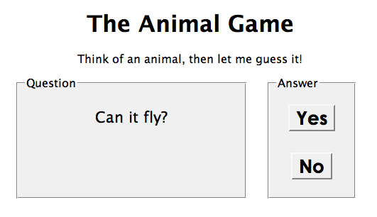

ascii.php example from a previous lecture.ascii.php service also accepts post requests, where you can submit a new ASCIImation into the system.post requires two parameters:
name : the last name of the student whose art is being submitted (String)ascii : the text of the ASCIImation to store (String)animalgame.php.
<node nodeid="id"> <question>question</question> <yes nodeid="id" /> <no nodeid="id" /> </node>
<node nodeid="id"> <answer>answer</answer> </node>
animalgame.php?nodeid=id
nodeid of 1 to get the first questionQuestions we should ask ourselves: